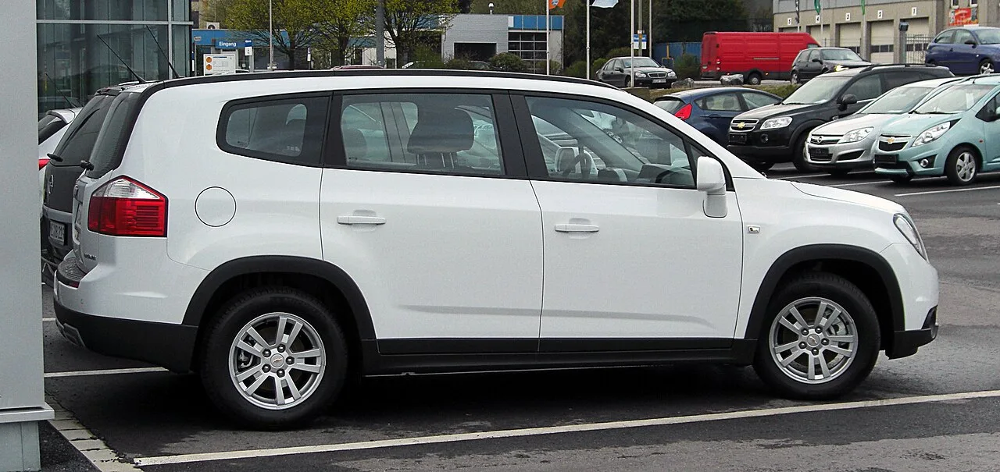
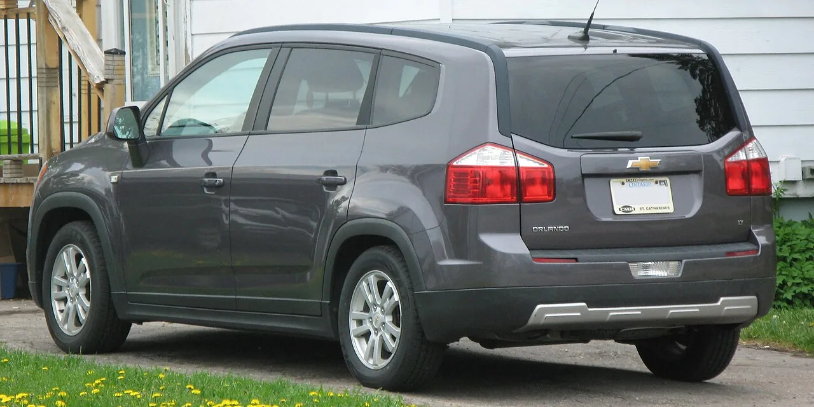

▲ 쉐보레 올란도 — 2018년 단종됐지만 국내 중고차 시장에서는 500만원대 7인승 패밀리카로 여전히 언급되고 있다
신차 시장에서 완전히 잊힌 이름이 중고차 시장에서는 여전히 회자되는 경우가 있습니다. 쉐보레 올란도가 그렇습니다. SUV 같은 높은 시야를 제공하면서도 실제 구조는 다목적차량(MPV)에 가까운 이 차는, 단종된 지 8년이 지난 지금도 "7인승과 넓은 적재공간, 합리적인 유지비를 모두 노릴 수 있는 몇 안 되는 패밀리카"로 꼽힙니다.
1. 왜 하필 지금도 올란도인가
▲ 올란도 후면부 — 7인승 구조에 2·3열을 접으면 대형 화물까지 여유롭게 실을 수 있는 적재 공간이 특징이다
올란도가 단종 8년이 지나서도 언급되는 이유는 대체할 만한 경쟁 모델이 마땅치 않다는 데 있습니다. SUV처럼 높은 운전 시야를 제공하면서도, 실제 구조는 MPV에 가까워 2열과 3열을 접으면 부피 큰 짐을 여유롭게 실을 수 있습니다. 평소에는 5인승으로 활용하다가 필요할 때 7인승으로 전환할 수 있는 유연성도 강점입니다. 국내 완성차 업체들이 이 가격대에서 이만한 실용성을 갖춘 신차를 내놓지 않다 보니, 중고 시장에서 올란도의 대체 불가능성이 오히려 부각되는 셈입니다.
2. 지금 시세는 얼마나 하나

▲ 올란도 측면부 — 2015~2018년식 기준 관리 이력이 명확한 매물은 500만원 안팎에서 형성돼 있다
2015~2018년식 올란도는 현재 400만~700만원대에서 거래되고 있으며, 그중에서도 관리 이력이 명확한 매물은 500만원 안팎에서 찾는 것이 권장됩니다. 200만~300만원대의 더 저렴한 매물도 있지만, 이런 매물은 주행거리가 20만km를 넘겼거나 별도 정비가 필요한 경우가 많아 구매 전 꼼꼼한 확인이 필수입니다.
3. 엔진 선택 — 디젤이냐 LPG냐
올란도의 엔진 옵션은 1.6 디젤(최고출력 134마력, 최대토크 32.6kg·m, 복합연비 13.5km/L)이 중심이며, LPG 모델도 선택할 수 있습니다. 두 옵션의 성격은 뚜렷하게 갈립니다. 디젤 모델은 장거리 운행에 적합하지만, 구매 전 DPF(매연저감장치)와 EGR(배기가스재순환장치)의 관리 이력을 반드시 확인해야 합니다. 반면 LPG 모델은 도심 주행에 유리하고 연료비가 저렴하다는 장점이 있지만, 점화계통과 인젝터 관리 상태를 잘 살펴봐야 합니다.

▲ 올란도 후측면 — 단종 차량인 만큼 구매 전 부품 수급 가능 여부까지 함께 확인하는 것이 좋다
4. 중고차 구매 전 챙겨야 할 것들
단종된 지 오래된 차인 만큼, 신차 구매와는 다른 기준으로 접근해야 합니다. 변속기와 냉각계통 상태, 하체에서 나는 소음 여부는 기본적인 점검 항목입니다. 여기에 앞서 언급한 디젤 모델의 DPF·EGR 관리 이력, LPG 모델의 점화계통·인젝터 상태까지 더해지면 확인해야 할 목록이 꽤 늘어납니다. 단종 차량은 부품 수급이 갈수록 어려워질 수 있다는 점도 장기 보유를 고려한다면 감안해야 할 부분입니다.
5. 구매 전 체크리스트
신차 라인업에서는 사라졌지만, 중고차 시장이라는 두 번째 무대에서 여전히 존재감을 지키고 있는 올란도. 가성비 7인승 패밀리카를 찾는 실수요자들에게는, 단종 여부보다 실제 상태와 관리 이력이 훨씬 중요한 판단 기준이 될 것입니다.